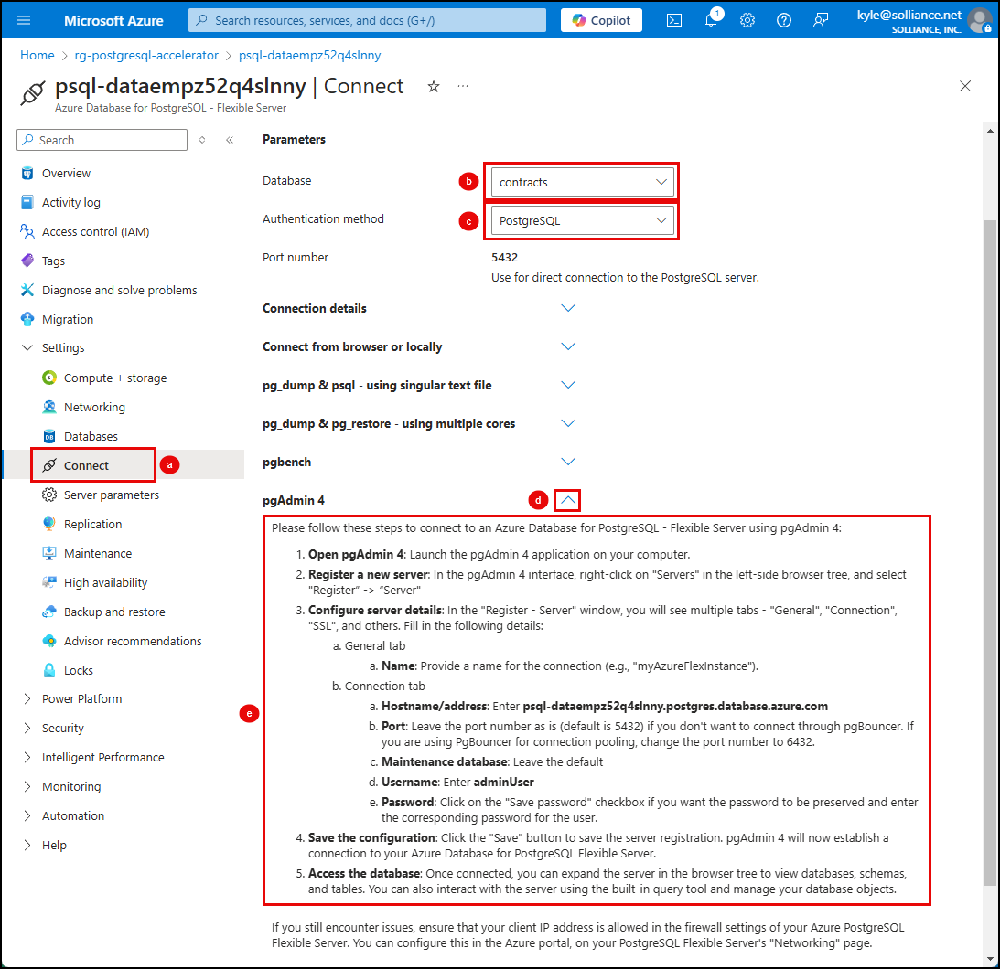

A. Self-Guided Setup¶
Welcome to the Self-Guided Lab Track! You will need a valid Azure subscription, a GitHub account, and access to relevant Azure OpenAI models to complete this lab. Review the prerequisites section if you need more details.
WERE YOU LOOKING FOR THE INSTRUCTOR-LED OPTION INSTEAD? You can find that here.
You will need to install the required software locally and provision the Azure infrastructure yourself, as described on the tabs below.
Select each of the tabs below, in order, to complete the required setup.
The required development environment uses a Visual Studio (VS) Code editor with a Python runtime. To complete this lab on your own computer, you must install the following required software. On completing this step, you should have installed:
- Azure command-line tools
- Git
- Python 3.11+
- Node.js
- Docker desktop
- Visual Studio Code and required extensions
- pgAdmin
1.1 Install Azure command-line tools¶
In this task, you will install both the Azure CLI and the Azure Developer CLI (azd).
- The Azure CLI enables you to execute Azure CLI commands from a command prompt or VS Code terminal on your local machine.
- The Azure Developer CLI (
azd) is an open-source tool that accelerates provisioning and deploying app resources on Azure.
-
Download and install the latest version of the Azure CLI.
-
Once installed, open a command prompt on your machine and verify the installation by running the following:
1az version -
Next, install the
mlextension to the Azure CLI.The ml extension to the Azure CLI is the enhanced interface for Azure Machine Learning. It enables you to train and deploy models from the command line, with features that accelerate scaling data science up and out while tracking the model lifecycle."
To install the
mlextensinon you should first remove any existing installation of the extension and also the CLI v1azure-cli-mlextension:1 2
az extension remove -n azure-cli-ml az extension remove -n mlThen, run the following to install the latest version of the
mlextension:1az extension add -n ml -
Install Azure Developer CLI by following the instructions for your OS at https://learn.microsoft.com/en-us/azure/developer/azure-developer-cli/install-azd.
-
Execute the following command from a terminal prompt to verify the tools were installed:
1azd version
1.2 Install Git¶
-
Download Git from https://git-scm.com/downloads.
-
Run the installer using the default options.
1.3 Install Python¶
Python is the programming used to build the backend API for the solution. By utilizing Python's versatile programming capabilities and Azure Database for PostgreSQL's generative AI and vector search capabilities, you can create powerful and efficient AI copilots and streamlining complex workflows.
-
Download Python 3.11+ from https://python.org/downloads.
-
Run the installer using the default options.
-
Use the following command from a terminal prompt to verify Python was installed:
1python --version
1.4 Install Node.js¶
-
Download Node.js from https://nodejs.org/en/download/, ensuring you select the most recent LTS version and your correct OS.
-
Run the installer using the default options.
1.5 Install Docker Desktop¶
-
Download and install Docker Desktop for your OS using instructions provided on the https://docs.docker.com/desktop/:
1.6 Install Visual Studio Code (and extensions)¶
Visual Studio Code is a versatile, open-source code editor that combines powerful features with an intuitive interface to help developers efficiently write, debug, and customize their projects.
The Prompty extension enhances productivity by providing intelligent code completions and suggestions, while the Python extension offers a comprehensive environment for Python development, including robust debugging, linting, and testing capabilities.
-
Download and install from https://code.visualstudio.com/download.
- Use the default options in the installer.
-
After installation completed, launch Visual Studio Code.
-
In the Extensions menu, search for and install the following extensions from Microsoft:
- Python
-
Prompty is an open-source generative AI templating framework that makes it easy to experiment with prompts, context, parameters, and other ways to change the behavior of language models. The easiest way to get started with Prompty, is to use the Visual Studio Code Extension. The offers an intuitive prompt playground within VS Code to streamline the prompt engineering process.
-
Close VS Code.
1.7 Install pgAdmin¶
Throughout this workshop, you will use pgAdmin to run queries against your PostgreSQL database. pgAdmin is the leading Open Source management tool for Postgres.
-
Download pgAdmin from https://www.pgadmin.org/download/.
-
Run the installer using the default options.
You must create a copy (known as a fork) of the GitHub repo and then clone that onto your local computer so you can work with the contents of the repo. After completing this step, you should have:
- Forked the PostgreSQL Solution Accelerator: Build your own AI Copilot repo to your personal GitHub profile
- Created a local clone of the repo
- Opened the cloned repo in Visual Studio Code
2.1 Fork Repo To Your Profile¶
Forking in GitHub refers to creating a personal copy of a public repository, which allows you to freely experiment with changes without affecting the original project.
-
To fork the PostgreSQL Solution Accelerator: Build your own AI Copilot repo, open a new browser window or tab and navigate to the repo at https://github.com/solliancenet/microsoft-postgresql-solution-accelerator-build-your-own-ai-copilot.
-
Select the Fork button to create a copy of the repo in your GitHub profile.
-
Login with your GitHub profile, if prompted.
-
On the Create a new fork page, select Create fork to make a copy of the repo under your GitHub profile.
-
The forked repo will open within your profile. On the GitHub page for your fork that opens, select the Code button and select the Copy URL to clipboard button next to the repo's HTTPS clone link:
-
Open a new command prompt and change directories to the folder within which you want to clone the repo (e.g., D:\repos).
-
Once in the desired directory, run the following
git clonecommand to download a copy of your fork onto your local machine. Ensure you replace the[url_of_your_forked_repo]token with the clone link you copied in the previous step.1git clone [url_of_your_forked_repo] -
Once the repository has been cloned, change directories at the command prompt to the folder of the cloned repo, then run the following command to open the project in Visual Studio Code:
1code .
Leave Visual Studio Code open as you will be using it throughout the remainder of the workshop.
This solution contains an Azure Developer CLI azd-template that provisions the required resources in Azure and deploys the starter app to Azure Container Apps (ACA). The template allows for the infrastructure to be deployed with a single azd up command. On completing this step, you should have:
- Authenticated with Azure
- Provisioned Azure resources
- Deployed the starter solution
3.1 Authenticate With Azure¶
Before running the azd up command, you must connect your VS Code environment to Azure by authenticating.
- To create Azure resources, you need to be authenticated from VS Code. Open a new intergated terminal in VS Code. Then, complete the following steps:
Step 1: Authenticate with az for post-provisioning tasks
-
Log into the Azure CLI
azusing the command below.1az login -
Complete the login process in the browser window that opens.
If you have more than one Azure subscription, you may need to run `az account set -s
to specify the correct subscription to use.
Step 2: Authenticate with azd for provisioning & managing resources
-
Log in to Azure Developer CLI. This is only required once per-install.
1azd auth login
3.2 Provision Azure Resource and Deploy App (UI and API)¶
Provision & deploy the solution with one command: azd up
You will be prompted to select the Azure region into which your resources should be deployed when running azd up."
Before selecting a region, you should refer to the regional availability guidance for both the gpt-4o and text-embedding-3-large models in Azure OpenAI and select a region that supports both models and has quota available.
Selecting a region that does not support both models will result in deployment failure.
-
Use
azd upto provision your Azure infrastructure and deploy the web application to Azure.1azd upYou will be prompted for several inputs for the
azd upcommand:- Enter a new environment name: Enter a value, such as
dev.- The environment for the
azd upcommand ensures configuration files, environment variables, and resources are provisioned and deployed correctly.
- The environment for the
- Select an Azure Subscription to use: Select the Azure subscription you are using for this workshop using the up and down arrow keys.
- Select an Azure location to use: Select the Azure region into which resources should be deployed using the up and down arrow keys.
- Enter a value for the
postgresqlAdminPassword: Enter the password you want to use for the admin account on your Azure Database for PostgreSQL flexible server.- Ensure you copy the password in a secure location so you can use it later to access the database.
- Enter a value for the
resourceGroupName: Enterrg-postgresql-accelerator, or a similar name.
Should you need to delete the
azdenvironment- Locate the
.azurefolder created at the root of the project in VS Code. - Expand the
.azurefolder and locate the folder matching the name of the environemnt you assigned. - Delete the folder for the environment.
- The next time you run the
azd upcommand, it will ask you to provide an environment name, along with the other values you were prompted for during setup.
- Enter a new environment name: Enter a value, such as
-
Wait for the process to complete. It may take 5-10 minutes or more.
-
On successful completion you will see a
SUCCESS: ...message on the console.
After running azd up on the ACA deployment and the deployment finishes, you can locate the URL of the web application by navigating to the deployed resource group in the Azure portal. Click on the link to the new resource group in the output of the script to open the Azure portal.
In this step, you will configure your Python development environment in Visual Studio Code. At the end of this step, you should have:
- Created a Python virtual environment
- Installed the required Python libraries from
requirements.txt - Create and populated a
.envfile in the Woodgrove API project. - Connected to your database using pgAdmin
4.1 Create a Python virtual environment¶
Virtual environments in Python are essential for maintaining a clean and organized development space, allowing individual projects to have their own set of dependencies, isolated from others. This prevents conflicts between different projects and ensures consistency in your development workflow. By using virtual environments, you can manage package versions easily, avoid dependency clashes, and keep your projects running smoothly. It's a best practice that keeps your coding environment stable and dependable, making your development process more efficient and less prone to issues.
-
Return to Visual Studio Code, where you have the PostgreSQL Solution Accelerator: Build your own AI Copilot project open.
-
In Visual Studio Code, open a new terminal window and change directories to the
src/apifolder of the repo. -
Create a virtual environment named
.venvby running the following command at the terminal prompt:Bash 1python -m venv .venvThe above command will create a
.venvfolder under theapifolder, which will provide a dedicated Python environment for theapiproject that can be used throughout this lab. -
Activate the virtual environment.
Select the appropriate command for your OS and shell from the table below and execute it at the terminal prompt.
Platform Shell Command to activate virtual environment POSIX bash/zsh source .venv/bin/activatefish source .venv/bin/activate.fishcsh/tcsh source .venv/bin/activate.cshpwsh .venv/bin/Activate.ps1Windows cmd.exe .venv\Scripts\activate.batPowerShell .venv\Scripts\Activate.ps1
4.2 Install required Python libraries¶
The requirements.txt file in the src\api folder contains the set of Python libraries needed to run the Python components of the solution accelerator.
Open the src\api\requirements.txt file in the repo to review the required libraries and the versions that are being used.
-
From the integrated terminal window in VS Code, run the following command to install the required libraries in your virtual environment:
1pip install -r requirements.txt
4.3 Create .env file¶
Configuration values, such as connection string and endpoints, that allow your application to interact with Azure services are hosted in an Azure App Configuration service. To enable your application to retrieve these values, you must provide it with the endpoint of that service. You will use a .env file to host the endpoint as an environment variable, which will allow you to run the Woodgrove API locally. The .env file will be created within the src\api\app folder of the project.
-
In VS Code, navigate to the
src\api\appfolder in the Explorer panel. -
Right-click the
appfolder and select New file... from the context menu. -
Enter
.envas the name of the new file within the VS Code Explorer panel. -
In the
.envfile, add the following as the first line, replacing the{YOUR_APP_CONFIG_ENDPOINT}with the endpoint for the App Configuration resource in yourrg-postgresql-acceleratorresource group.1AZURE_APP_CONFIG_ENDPOINT={YOUR_APP_CONFIG_ENDPOINT}To get the endpoint for your App Configuration resource:
- Navigate to your App Configuration resource in the Azure portal.
- Select Access settings from the resource navigation menu, under Settings.
-
Copy the Endpoint value and paste it into the
.envfile.
-
Save the
.envfile.
4.4 Connect to your database from pgAdmin¶
You will use pgAdmin from your machine to configure various features in the database and execute queries to test those features. Please follow the steps below to connect to your Azure Database for PostgreSQL - Flexible Server using pgAdmin:
- Navigate to your Azure Database for PostgreSQL - Flexible Server resource in the Azure portal.
- On the Azure Database for PostgreSQL - Flexible Server page:
- Select Connect under Settings in the left-hand resource menu.
- Select the contracts database from the Database name dropdown.
- Expand the pgAdmin 4 block.
-
Follow the steps provided to connect to your database from pgAdmin.

Leave pgAdmin open as you will be using it throughout the remainder of the workshop.